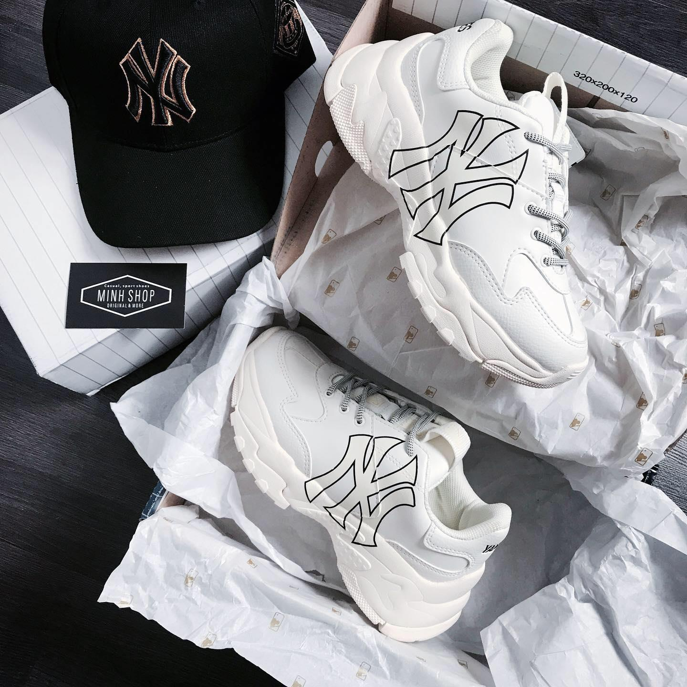
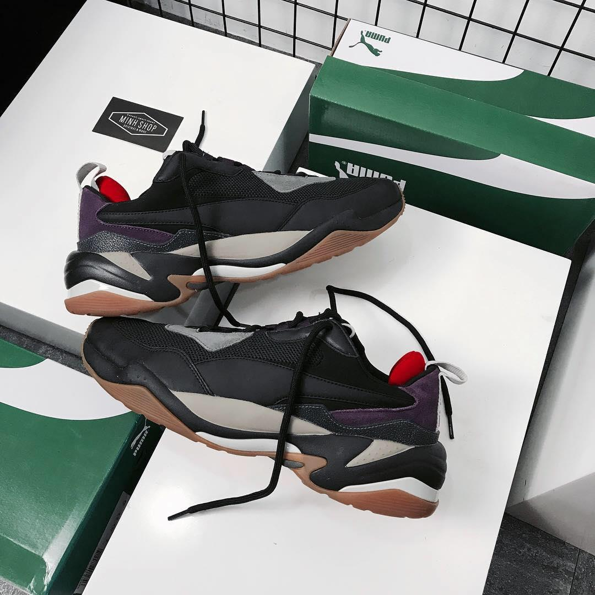
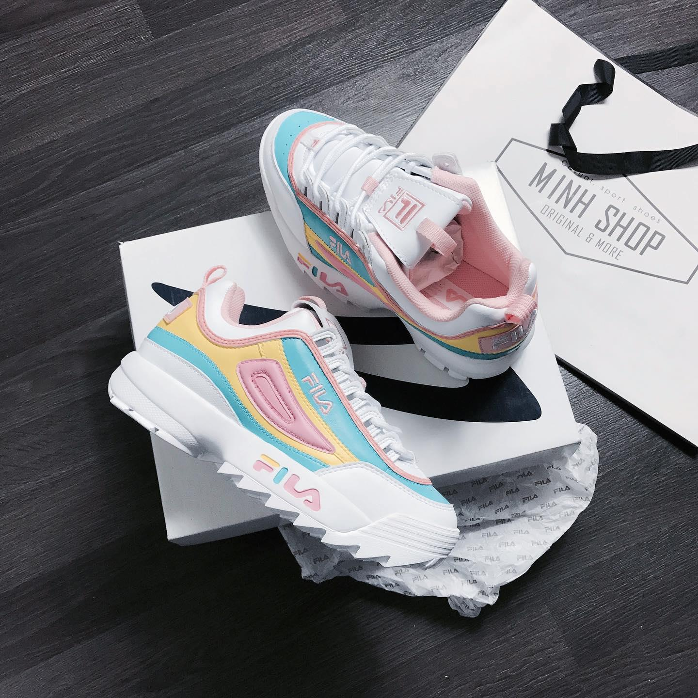

Tiếp xúc với Sneaker Culture, chúng ta, những người trẻ, không được tiếp xúc với văn hoá này đúng thời điểm, đúng ngày mà nó được sinh ra tại san francisco, LA hay NY, chúng ta chỉ là tay ngang trong những cuộc chơi của sự lặp lại trong dòng thời gian mà đến thời điểm hiện tại, đó là Dad Shoes hay còn gọi là Chunky Sneaker, đầy rẫy khắp các con phố, hang cùng ngõ hẹp của Sài Gòn, chúng ta thấy hàng tá Balenciaga Triple S Rep 1:1, LV Archlight Super fake, đó không phải là Culture, đó được gọi là trào lưu nhất thời mà một nhóm ít bạn trẻ chưa có được tiềm lực tài chính để khoác lên mình những gì mà công sức của những nhà thiết kế, gia công bỏ thời gian, sức lực, mồ hôi và chất xám để làm nên câu chuyện của một đôi giày
chí ít, đâu đó tôi thấy họ không hẳn không tôn trọng đôi giày đó, họ chỉ đơn giản là muốn chứng tỏ cái tôi của mình, phải theo kịp xu hướng, thời đại, hoặc để đơn giản là chứng minh với cô bạn gái đi cùng mình, họ không có tội, chỉ là họ bị tất cả những điều đó chi phối
Đó là một số ít cảm nghĩ mà tôi nghĩ rằng một số bạn trẻ nên suy nghĩ lại, tôi không tiếc cho các bạn, tôi chỉ tiếc cho một số người đang cố gắng đem những điều hay nhất, đẹp nhất để mang những thứ như skateboard, graffity hay cả Sneaker World từ phương tây về cho các bạn
còn về dad shoes, nó xuất hiện từ đây rất lâu rồi, trong tâm trí tôi, nó là một đôi giày khá cồng kềnh, nói chính xác hơn nó là một đôi giày của những old man mang cách đây chừng 20 năm mà tôi đã được thấy qua, năm đó tôi 4 tuổi và được một người dì từ bang Iowa gửi về thông qua một người bạn khi về nước. Tôi mặc xà lõn cũng mang đôi giày đó, đi học cũng mang, thậm chí có lần đi chơi 5 10 mang còn bị ba má chửi, sau đó thì khi lên 7 tuổi tôi cũng đã phải bỏ đi, phần vì nó đã mục nát, phần vì không còn vừa với đôi chân đã quá chật
không biết các bạn ntn, với tôi, mỗi đôi giày là một câu chuyện phía sau nó, tôi nghiện mùi vải hoặc nhựa mới của mỗi đôi giày, những đường cắt, đường vải, đường chỉ nó đều mang đậm dấu ấn của hãng và phong cách của designer đã thiết kế nên đôi giày đó, nên hãy trân trọng hết tất cả những gì mà chúng ta đang được mang vào chân ngày hôm nay, nó có giá, có thể đắt, có thể rẻ, nhưng hãy respect nó. Và sau 20 năm, cảm xúc vẫn còn nguyên vẹn để tôi có thể viết bài blog này.
Nếu nói Dad shoes là một trào lưu để thoái trào thì không hẳn, nhưng nói nó là một phần trong Sneaker Culture thì đúng hơn. Nó đã có một thời gian là trend, sau đó ngụp lặp hơn 20 năm, để rồi Balenciaga đưa nó trở lại với sàn catwalk rồi sau đó, hàng loạt hãng hồi sinh dad/chunky shoes với hàng loạt collection dài đằng đẵng hàng chục mẫu dành cho một nhóm người với nhiều tính cách và thiết kế khác nhau. Tôi không phải là ai trong cái Sneaker Culture này, tôi chỉ là một người theo dõi những gì đến và đi, những quy luật bất thành văn trong cái văn hoá này. Dad shoes hay không không quan trọng, quan trọng là bạn mang vào chân cảm thấy hợp về bên trong (cảm giác mang) và bên ngoài (hợp nhãn) là tuyệt vời nhất, chúc bạn pick được một đôi giày ưng ý nhất trong tầm giá, bài viết này chắc là kết thúc tại đây, cảm ơn các bạn đã click vào xem !